Ink — default
Ink — default Terracotta — action ground
Terracotta — action ground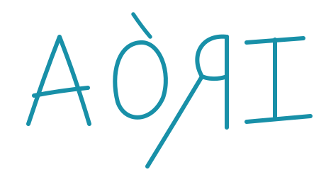
Aegean — cool ground Paper — reversed on pigment
Paper — reversed on pigmentA playful, illustration-driven design system — watercolour plates, flat pigment, zero radius, no shadows — for websites and brands that should feel handmade. Not tied to any product: the flagship case is a fictional silver-jewellery workshop, and a harbourside taverna is built from the same tokens to prove it.
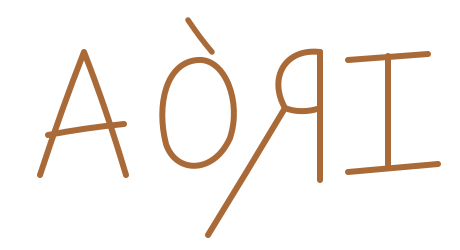
The system exists to make one thing possible: a shop, a document or a post that looks like it came from a workshop rather than a brand studio. The voice is a maker talking, not a brand announcing. The principles below are the system's; the worked examples in this book speak in the voice of its flagship case, the jewellery workshop, whose runs of twelve supply the numbers.
“Made by hand in Heraklion, in runs of twelve, and named after the places they came from.”
“Silver 925, hammered on the bench and left matte. Named for the beach below the village, where the water goes flat at six in the evening.”
“We will make more, but not the same.”
The wordmark is a vector trace of painted lettering and is the only mark. It is never re-set in type above 28px, and no second mark may be invented. The five painted files that arrived named as logos carry no readable brand name; they are filed as emblems and always sit subordinate to the wordmark.
Ink — defaultTerracotta — action ground
Aegean — cool groundPaper — reversed on pigmentEach colourway also exists with a macron — -macron — for the AŌRI styling used in the Instagram bio.
Clear space is 1X — the cap height of the A — on all four sides, ½X at absolute minimum. Digital floor 120px wide, print floor 30 mm; below that the reversed-R monogram stands in. Eight misuses are ruled out on the usage sheet: stretched, squeezed, rotated, shadowed, recoloured, on a gradient, on a painting without a plate, re-set in type. Still open: the original painted artwork at full size, to replace the trace.
Two registers, and they do not mix arbitrarily. Lime is the ground — sun-bleached plaster, not white. Pigments are sampled by frequency out of the paintings themselves, laid flat and opaque, never tinted, shaded or gradiented. Stone is the clerical register, used for anything administrative: sizing, shipping, order status, specification.
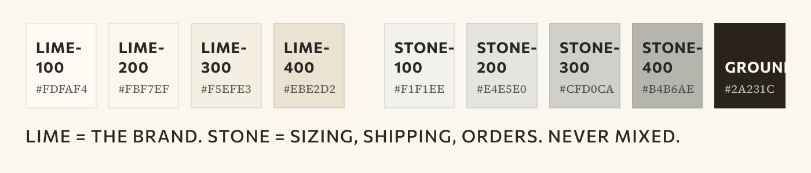
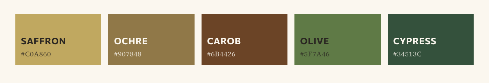
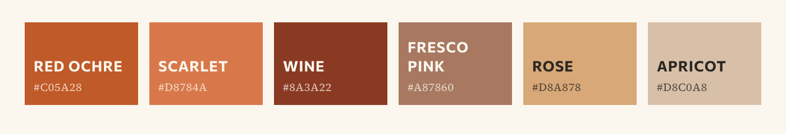
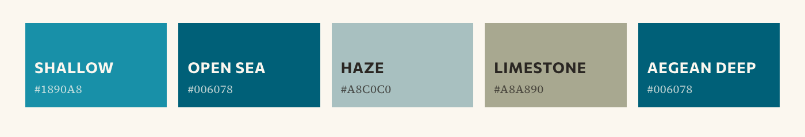
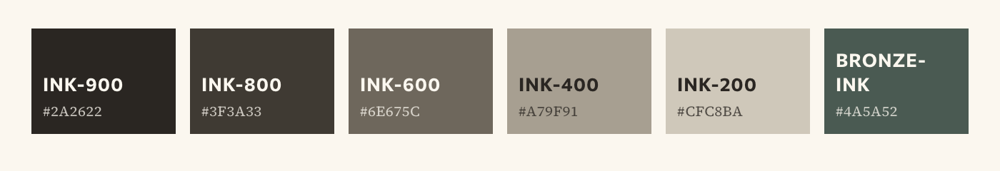
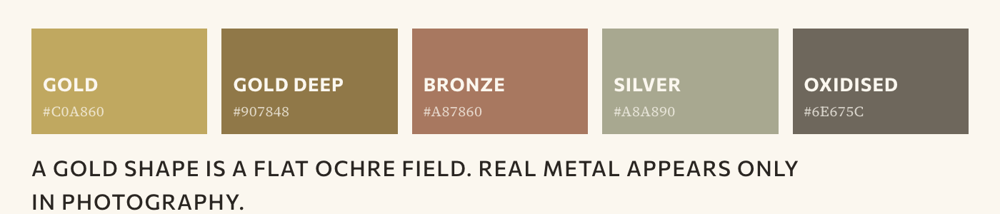
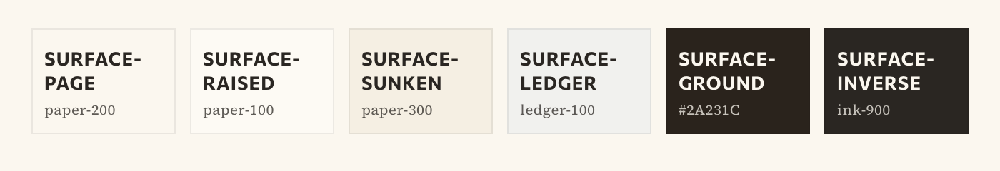
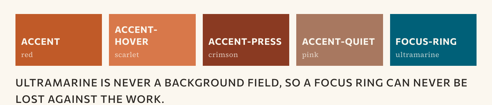
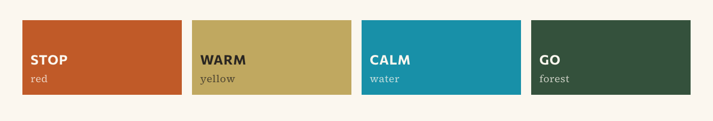
Three faces, three jobs. GFS Didot for display — names, headings, prices — uppercase and tracked, and Greek-capable, which is why it won. Commissioner for the annotation voice: labels, buttons, metadata, nav, always uppercase and tracked at weight 600. Source Serif 4 for body prose, sentence case, 15–17px at line-height 1.7. All three are Google-hosted substitutions; no licensed font files were provided.
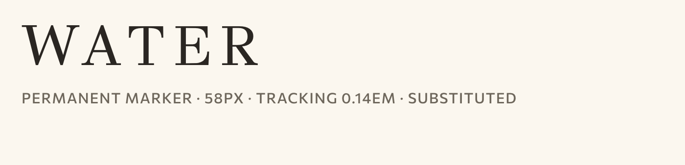
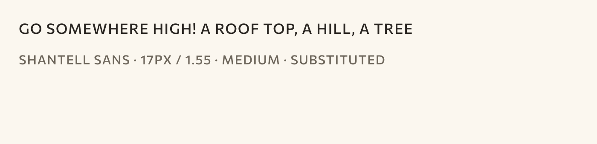
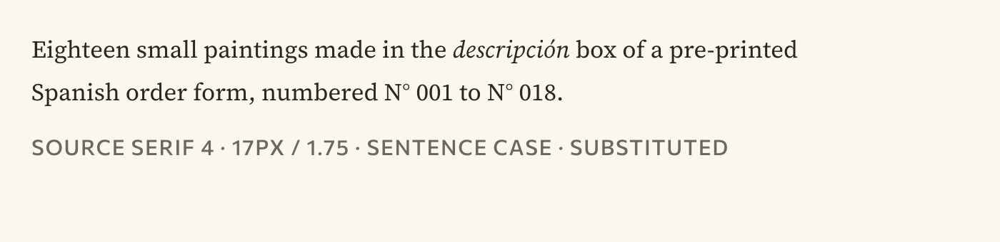
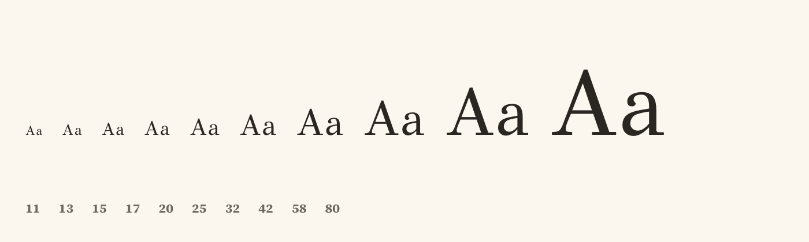
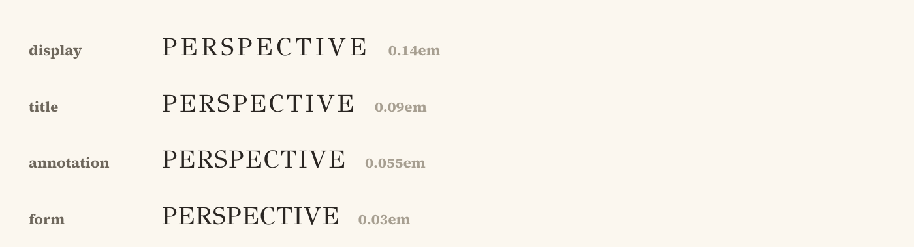
Minimum sizes — 24px in a 1920×1080 slide, 12pt in print, 44px hit targets in a mobile mock.
One hand, two jobs. Everything is watercolour and gouache on cotton paper — saturated fields held inside a drawn contour, the paper reading through the lighter passages, nothing opaque white, nothing greyed to recede. Twenty-three places, figures and still lifes as full plates, mounted with a 5px unpainted margin on toned stock.


The paintings are the loudest thing in the system: maximum chroma, hard contour, white paper. Every treatment that makes a photograph quieter moves it further from them. Four routes are documented; the standing recommendation is route 3 now, route 2 over time — shoot on the painted paper, and have the pieces painted as the range settles. A photograph never opens the site and never appears on packaging.
The eight stand-in photographs are not in this repository. Their paths hold labelled placeholder tiles so the pages lay out correctly; none showed an AORI piece in any case.
Motifs are circles. Patterns are squares. That is the shape rule, and it holds everywhere. A motif is never redrawn — every one is cut out of a finished painting. Four are knocked out of their painted field, two are cropped to a disc. If a subject has no painting, it has no mark.


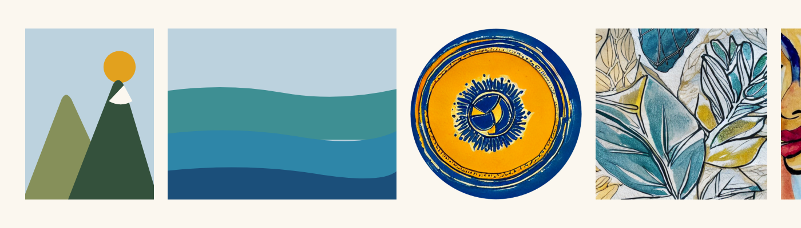
Sixteen marks on a 24px keystone grid — 2px stroke, butt caps, mitre joins, square corners,
currentColor. The same carbon rule that draws the system's borders, taught sixteen
shapes. The two sets never trade jobs: a motif never acts as a control, and an icon never
decorates.
Three motifs (spiral, hoop, beaded strand) still have no painting and stand in as disc crops. The functional set answers the icon question; it does not close the painting one.
Corner radius is zero and there are no shadows. Depth is a 2px carbon rule, a 1px hairline, or a flat pigment field — never a blur. A painting opens a page; a photograph shows a piece. Photographs go full bleed with no border; paintings keep a 5px unpainted margin on toned stock.
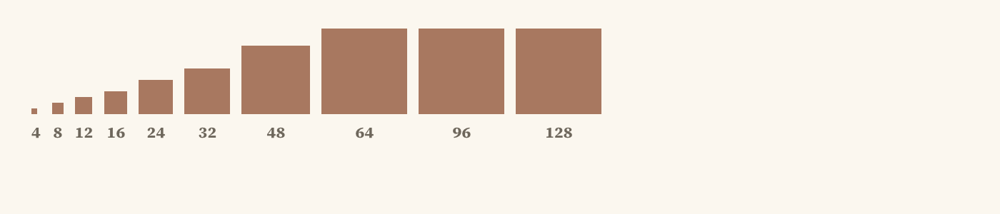
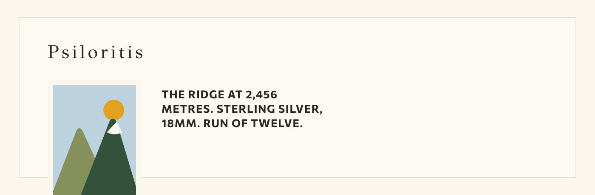
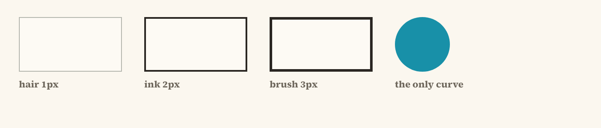
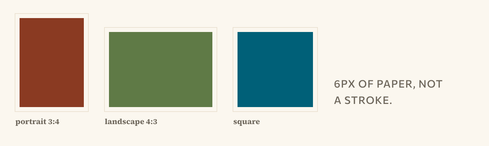
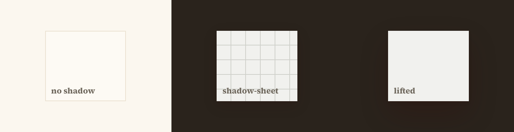
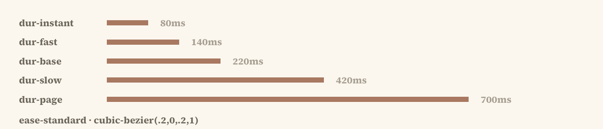
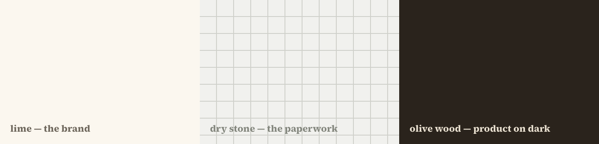
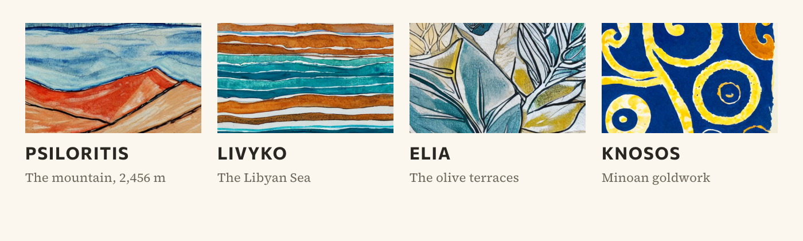
Twenty components in five groups, each with a .jsx, a .d.ts and a
.prompt.md. Three templates a consuming project can copy, and a click-through storefront
composed from the components.
Specified but never built: Stamp (emblem-as-seal) and LedgerRow (the clerical table row).
Two products, one system. The flagship case — a fictional silver-jewellery workshop — runs
across four channels; then a harbourside taverna is built from the same tokens, registers and
rules, with nothing reskinned. Source artboards live in cases/.


Measured against the section set common to the IBM, SeatGeek and Slack brand books.
AORI design system · Edition one · All rights reserved · Collections, prices and run counts throughout are placeholder data